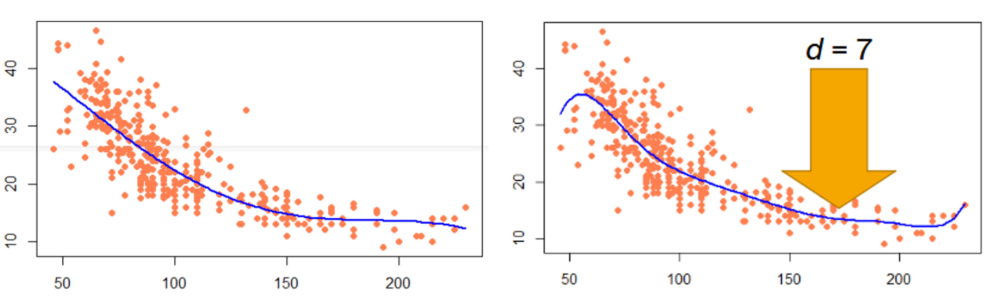
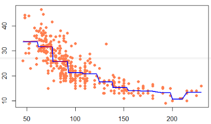
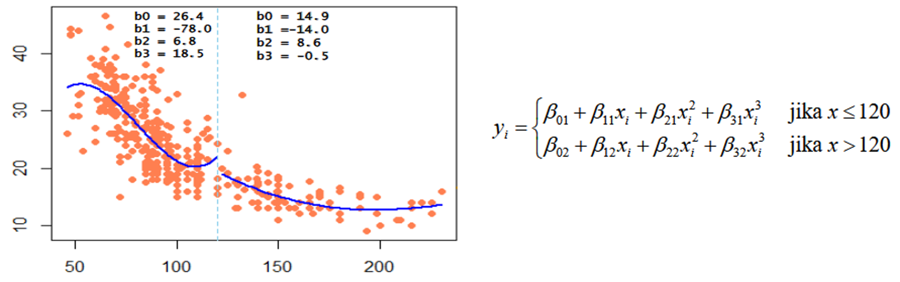

Mata Kuliah: Machine Learning
Regresi Tak Linear
Pendahuluan
Regresi tak linear adalah salah satu metode regresi yang memodelkan hubungan antara input dan output dengan menggunakan fungsi-fungsi matematika yang tidak linier.

Pendahuluan
Apa fungsi regresi yang paling fit untuk data berikut?
Pendahuluan
Hubungan antara upah dan pengalaman kerja dapat dijelaskan dengan fungsi regresi tak linier. Semakin lama pengalaman kerja, upah yang diterima akan meningkat, namun maksimumnya akan tercapai. Setelah mencapai titik maksimum, upah akan tetap konstan atau bahkan menurun seiring bertambahnya pengalaman kerja.
Startegi Menghadapi Pola Tak Linear
- Transformasi Variabel: Mengubah variabel input atau output dengan fungsi matematika tertentu, dengan harapan data hasil transformasi memiliki pola linier.
- Melakukan pemodelan per cluster atau segmentasi data.
- Menggunakan fungsi regresi tak linier. Misalnya, regresi polinomial, regresi piecewise, regresi spline, regresi generalized additive model (GAM),
- Menggunakan metode machine learning lain seperti random forest, support vector machine, neural network, deep learning, dan lain-lain.
- Pemulusan (smoothing) data.
Regresi Polinomial
Model:
\[
Y = \beta_0 + \beta_1 X + \beta_2 X^2 + \ldots + \beta_p X^d + \epsilon
\]
di mana \(d\) adalah derajat polinomial.
Derajat polinomial yang sering digunakan adalah derajat 2 (kuadratik) dan derajat 3 (kubik).
Derajat polinomial yang tinggi dapat menyebabkan overfitting. Kurva berbentuk terlalu liar, terutama pada bagian ujung.

Fungsi Tangga (Piecewise)
Model:
\[
Y = \beta_0 + \beta_1 I(X \leq c_1) + \beta_2 I(c_1 < X \leq c_2) + \ldots + \beta_k I(c_{k-1} < X \leq c_k) + \epsilon
\]
di mana \(I\) adalah fungsi indikator.
Fungsi tangga membagi data menjadi beberapa segmen dan memodelkan setiap segmen dengan fungsi linier.
Setiap segmen memiliki intercept dan slope yang berbeda.

Regresi Spline
Regresi spline adalah metode regresi yang membagi data menjadi beberapa segmen dan memodelkan setiap segmen dengan fungsi polinomial. Regresi ini adalah generalisasi dari regresi polinomial dan regresi tangga.
Kelebihan regresi spline adalah fleksibilitas dalam menangkap pola data yang kompleks.

Pemulusan Data (Smoothing)
Pemulusan data adalah teknik untuk mengurangi fluktuasi atau noise dalam data sehingga pola utama lebih mudah terlihat. Teknik ini sering digunakan dalam analisis deret waktu. Metode Pemulusan Data:
- Moving Average: Menghitung rata-rata dari sejumlah titik data dalam jendela bergerak.
- Exponential Smoothing: Memberikan bobot yang lebih besar pada titik data yang lebih baru.
- LOESS (Locally Estimated Scatterplot Smoothing): Menggunakan regresi lokal untuk memuluskan data.

Reference
- James, G., Witten, D., Hastie, T., & Tibshirani, R. (2013). An Introduction to Statistical Learning: With Applications in R. New York: Springer.
- Hastie, T., Tibshirani, R., & Friedman, J. (2009). The Elements of Statistical Learning: Data Mining, Inference, and Prediction (2nd ed.). New York: Springer Science and Business Media.